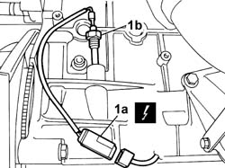

1084A40 ENGINE OIL LEVEL SENSOR - R + R
- Path
- Procedures > 10 ENGINE UNIT > 1084 ENGINE LUBRICATION SYSTEM > 1084A INDICATORS/CHECK DEVICES > 1084A40 ENGINE OIL LEVEL SENSOR - R + R
- Kind
- repair procedure (removal / refitting; the operation number is the code)
- Applies to
- engines: 2.0 16V; all production periods
- Interactive page
- https://sloeber94.github.io/elrnDB-fDct/en/#/244000921
Applies to: engines: 2.0 16V; all production periods
 Removing
Removing
 Refitting
Refitting- Position the vehicle on the lift.
- Disconnect the negative battery terminal.
- Raise the vehicle.
1. Disconnect the electrical connection (1a), then undo and remove the engine oil level sensor (1b).

Applies to: engines: 2.0 16V; all production periods
Refitting
Removing- Place the engine oil level sensor in its housing.
- Connect the electrical connection for the oil pressure sensor and tighten it.
- Lower the vehicle.
- Connect the negative battery terminal.
- Remove the vehicle from the lift.